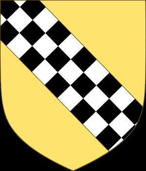

Sheriff of Dunbarton. Blev ca 58 år.
omkring 1265 Menteith, Pearthshire, Scotland. [1]
omkring 1323 Menteith, Pearthshire, Scotland.
Sir John Menteith av Ruskie och Knapdale (ca 1275 – ca 1329) var en skotsk adelsman under skotsk självständighetskrig . Han är känd för sin tillfångatagande av Sir William Wallace 1305 och gick senare med kung Robert I av Skottland och fick stora landanslag i Knapdale och Kintyre för sin tjänst. Han beskrivs som "väktare" av Earldomen av Menteith , eftersom hans sonson Alan II, Earl of Menteith var minderårig vid tiden för Alan I, Earl of Menteiths död .
Innehåll
Livet
John var den yngre sonen till Walter Bailloch Stewart och Mary I, grevinnan av Menteith , dotter till Muireadhach II , Earl of Menteith . [1] John ägde landet Ruskie i Stirlingshire . John var en part i Turnberry Bond med sin far, Walter Stewart and the Bruces, som undertecknades på Turnberry Castle den 20 september 1286.
Tillsammans med sin äldre bror Alexander var John inblandad i motståndet mot kung Edvard I av England och tillfångatogs båda efter slaget vid Dunbar den 27 april 1296. Medan Alexander släpptes efter att ha svurit trovärdighet förblev John fånge på Nottingham Castle i England fram till Augusti 1297, när Edward släppte John från fängelset, efter att han avlade ed och gav säkerhet för att tjäna med kungen i fälttåget 1297 i Flandern.
Sigill av John de Monteith (ca 1297)
Han utnämndes till konstapel av Lennox och härjade i Edwards partisaners land i Lennox 1301. John sändes 1303 för att behandla fred med engelsmännen, men avstod från att trycka på sitt uppdrag. År 1303 underkastade sig John och hade återställts till Edwards fördel, för den 20 mars 1304 utnämndes John till vaktmästare för slottet, staden och sheriffen i Dumbarton. Edward var angelägen om att säkra befästningen som en viktig tillfartsväg till Skottland sjövägen.
John, som sheriff av Dumbarton, påstås ha konspirerat, 1305, med Aymer de Valence, 2:a earlen av Pembroke , och Robert Clifford, 1:e baron Clifford , vid Parish Church i Rutherglen , South Lanarkshire, för att fånga Sir William Wallace och överlämnade honom till kaptenen av Skottland, nedanför Forth, John Segrave, 2nd Baron Segrave . [2] [3] En tjänst för vilken han skulle belönas med mark och titlar. [3] För detta stämplades John som förrädare och fick det samtida smeknamnet Fause Menteith ("Menteith den förrädiske, falska").
Fause Menteiths lilla gargoylchef på vakthuset från 1500-talet vid Dumbarton Castle
Wyntoun , vars Metrical Chronicle skrevs 1418, säger:
Schyre Jhon av Menteith i tha dagar
Tuk i Glasgow William Walays;
Och sände hym till Ingland sune,
Där var han kvart och ogjort.
Den engelske krönikören Piers Langtoft uppger att Menteith upptäckte Wallaces reträtt genom den förrädiska informationen från Jack Short , Wallaces tjänare, och att han kom i skydd av natten och grep honom i sängen. En passage i Scalachronica , citerad av John Leland , noterar, "William Walleys togs från greven av Menteith, om Glasgow, och skickades till kung Edward, och hängdes, ritades och placerades i London."
Menteith utsågs till en av representanterna för de skotska baronerna i båda nationernas parlament som samlades i London i september 1305 och valdes av det skotska rådet, som utsågs för att bistå John of Brittany , den nya väktaren av Skottland , på engelska. intressera. John mottog den 1 juni 1306 av Edward Earldomen av Lennox , medan han den 15 juni mottog Warden av slottet, staden och sheriffdomen i Dumbarton för livet. John återvände till Skottland i oktober. [3]
Edvard vädjade till John i december 1307 att gå med honom i att motstå den revolterande Robert de Brus , men John övergav sitt jarldöme av Lennox och gick med Brus sida. Kung Robert I av Skottland belönade John med stora anslag i Knapdale och Kintyre . I mars 1308 var John bland de skotska magnater som skrev till kung Filip IV av Frankrike på uppdrag av nationen och 1309 skickades han tillsammans med Sir Nigel Campbell för att behandla med Richard de Burgh, jarl av Ulster , för att få en säker- uppförande den 21 augusti, från kung Edward II av England . Johns engelska länder förverkades för hans förräderi. År 1316 fick han uppdrag med Thomas Randolph, Earl of Morayatt på Robert Brus vägnar behandla en vapenvila med engelsmännen. John förblev nära knuten till det kungliga hovet, vilket framgår av de många stadgar som han intygade och var vid Arbroath-parlamentet i april 1320, och undertecknade Arbroath-deklarationen som skickades av baronerna i Skottland till påven Johannes XXII .
John var en av förhandlarna av den trettonåriga vapenvilan mellan Bruce och engelsmännen, undertecknad den 30 maj 1323 och var närvarande vid ett skotskt råd i Berwick i juni. De sista registrerade bidragen till honom är 1329, under minoriteten av kung David II av Skottland .